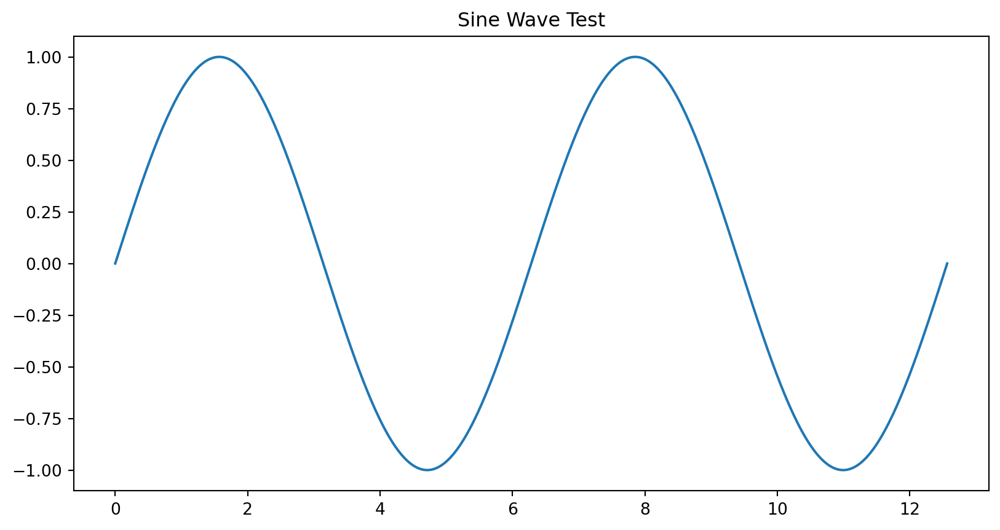
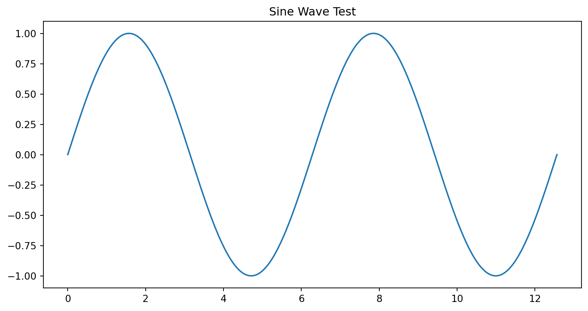

Introduction and Probability
December 13, 2025
Welcome to MATH 476.
This course introduces probability and statistics with an emphasis on modeling and data and not running over the margins.
Key idea: probabilities are always between \(0\) and \(1\).
You need to know expectation, mean, etc. with a h2 header
\[\begin{gather*} \var(Y) = \operatorname{var}(Y) \\ \DeclareMathOperator{\var}{var} \var(Y) = \operatorname{var}(Y) \\ \Ex[Y] = \Ex[f(X)], Y \in \reals \\ \end{gather*}\]
an h3 header
and even more on this slide without the header
This slide verifies that Python runs inside your Quarto RevealJS slides.

This slide tests interactive graphics.
© Fred J. Hickernell